天安门广场及周边景点游览计划
乙巳年 · 九月一日
SUMMARY
| 景点 | 70周岁门票 | 绿色通道 | 预计时长 | 预约方式 |
|---|---|---|---|---|
| 天安门升旗 | 免费 | 非官方提及 | 2-3小时 | "天安门广场预约参览"小程序 |
| 人民大会堂 | 免费 | 无明确通道 | 1-2小时 | "人民大会堂参览预约"小程序 |
| 国家博物馆 | 免费 | 北门绿色通道 | 2-3小时 | 国博官网/小程序，提前7天 |
| 故宫 | 半价(60岁+) | 爱心通道 | 3-6小时 | "故宫博物院"小程序，提前20天 |
| 中央礼品中心 | 免费 | 60岁+现场预约 | 2-3小时 | 公众号实名预约 |
| 国家大剧院 | 半价 | 无障碍设施 | 2-3小时 | 官方平台购票 |
| 鸟巢 | 免票 | 无障碍通道 | 1-2小时 | 小程序/现场购票 |
| 水立方 | 免费(65岁+) | 证件核验 | 约1小时 | "水立方"公众号购票 |
| 奥森公园 | 免费 | 无需 | 半天至全天 | 无需预约 |
| 天坛 | 免费(60岁+) | 全园无台阶 | 2-3小时 | "天坛"/"畅游公园"公众号，提前7天 |
| 什刹海 | 免费 | 无需 | 2-3小时 | 无需预约 |
| 圆明园 | 免费(65岁+) | 爱心休息区/轮椅 | 3小时 | "圆明园遗址公园"公众号 |
| 颐和园 | 免费(60岁+) | 无障碍游线/轮椅 | 3小时 | "颐和园"公众号，提前7天 |
| 雍和宫 | 半价(60岁+) | 人工窗口 | 1-2小时 | 现场购票/公众号 |
SCENIC SPOTS
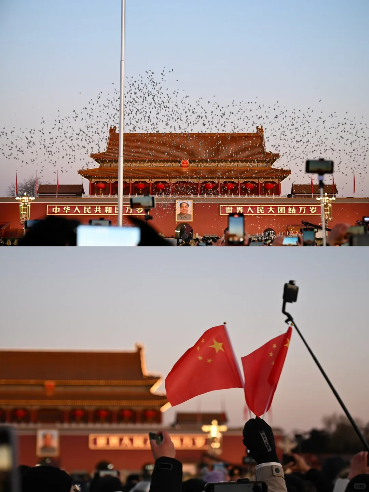
| 游览日期 | 2026年9月1日（8月31日半夜排队） |
|---|---|
| 升旗时间 | 约05:42:09（9月1日有军乐团现场演奏） |
| 门票价格 | 免费，但须提前预约 |
| 预计时长 | 升旗仪式约10分钟；含排队、拍照建议预留2-3小时 |
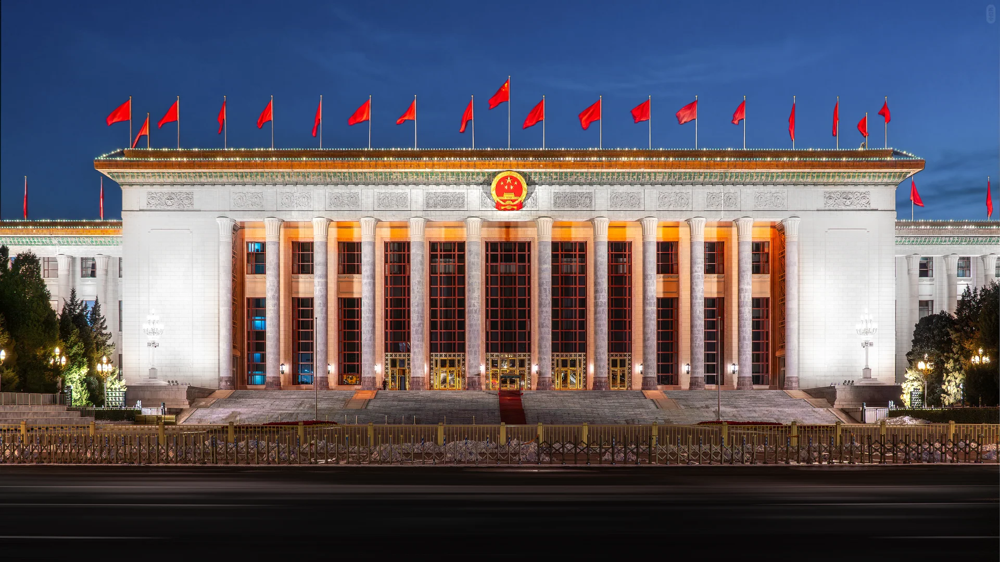
| 地址 | 北京市东城区天安门广场西侧 |
|---|---|
| 开放时间 | 9:00-15:00，14:30停止检票 |
| 门票价格 | 成人票30元；学生票15元；60周岁（含）以上中国公民免费 |
| 预计时长 | 建议预留1-2小时（含排队安检、检票和通行时间） |
| 地址 | 北京市东城区东长安街16号（天安门广场东侧） |
|---|---|
| 开放时间 | 每日9:00-17:00，16:00停止入馆；周一闭馆（法定节假日除外）。6月1日至10月31日延长至17:30 |
| 门票价格 | 免费参览，须实名预约 |
| 预计时长 | 建议预留2-3小时；深度游览建议3小时以上 |
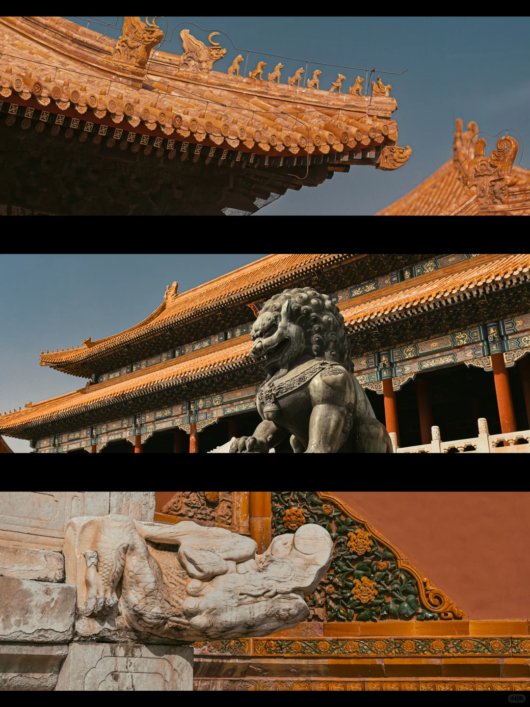
| 地址 | 北京市东城区景山前街4号（天安门广场北侧） |
|---|---|
| 开放时间 | 旺季（4月1日-10月31日）8:30-17:00（16:00停止入馆）；淡季（11月1日-3月31日）8:30-16:30。周一闭馆 |
| 门票价格 | 旺季60元/人；淡季40元/人。珍宝馆、钟表馆各10元。60周岁以上半价；18周岁以下免费 |
| 预计时长 | 半日游3-4小时；深度游览6小时以上 |
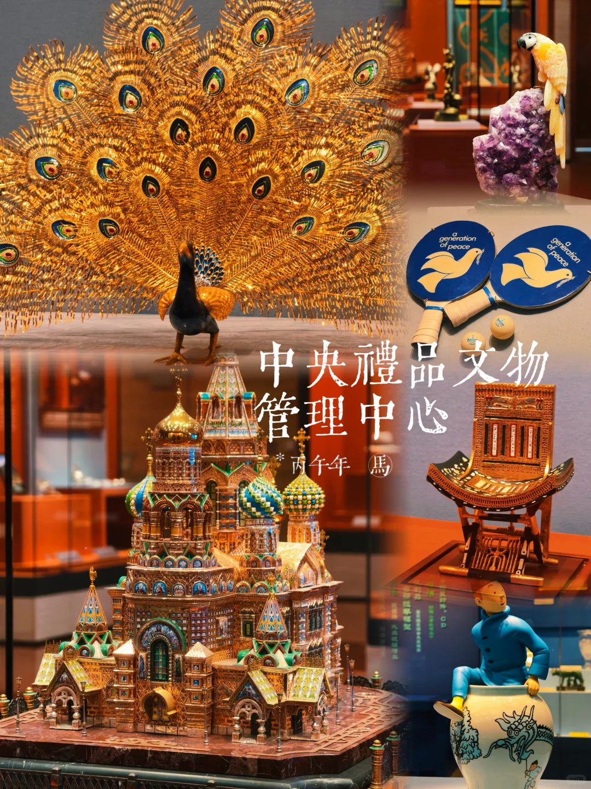
| 地址 | 北京市东城区西兴隆街1号（近地铁2/5号线崇文门站H口） |
|---|---|
| 开放时间 | 周二至周日 9:00-17:00（16:00停止入场），周一闭馆 |
| 门票价格 | 免费 |
| 预计时长 | 2-3小时 |
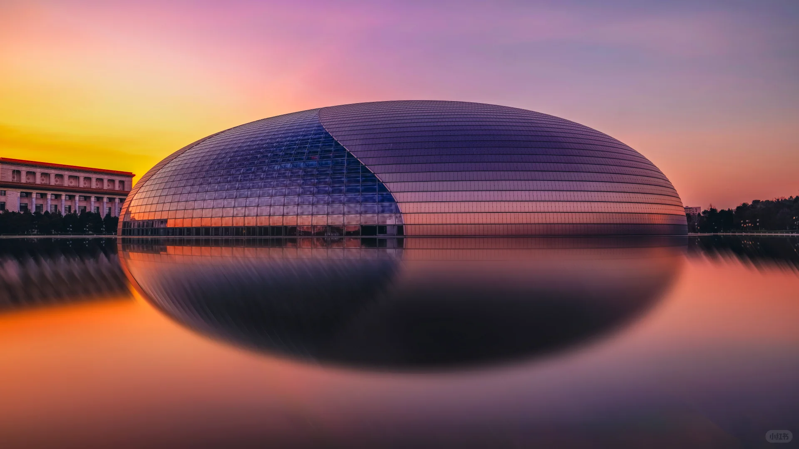
| 地址 | 北京市西城区西长安街2号（天安门广场西侧） |
|---|---|
| 开放时间 | 周二至周日及国家法定节假日 9:00-17:00；周一闭馆 |
| 门票价格 | 参览票40元/人；60-69周岁半价20元；70周岁及以上免票 |
| 预计时长 | 2-3小时 |
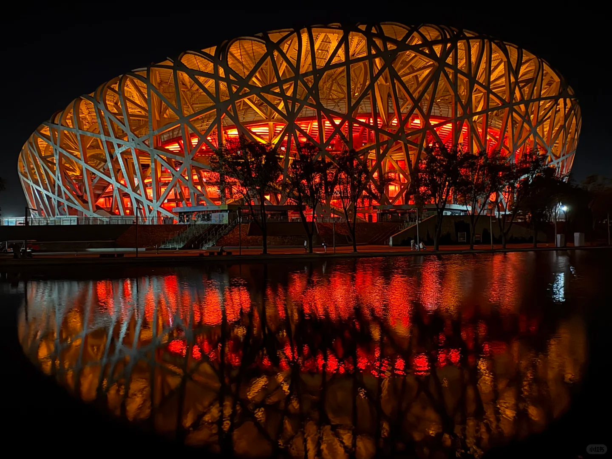
| 鸟巢地址 | 北京市朝阳区国家体育场南路1号 |
|---|---|
| 鸟巢时间 | 10:00-22:00（21:00停止检票） |
| 鸟巢门票 | 成人票50元；70周岁以上免票；60-69周岁25元（半价） |
| 水立方门票 | 全价票30元；60-64周岁半价15元；65周岁及以上免费 |
| 奥森公园 | 免费，无需预约。旺季6:00-20:00；淡季7:00-19:00 |
| 预计时长 | 鸟巢约1-2小时；水立方约1小时；奥森半天至全天 |
| 地址 | 北京市东城区天坛内东里7号 |
|---|---|
| 开放时间 | 公园：旺季6:00-22:00；淡季6:30-22:00。核心景点：旺季8:00-17:30；淡季8:00-17:00。周一核心景点关闭 |
| 门票价格 | 旺季大门票15元，联票34元；淡季大门票10元，联票28元。60周岁及以上免费（含核心景点） |
| 预计时长 | 含核心景点2-3小时；仅公园散步1-2小时 |
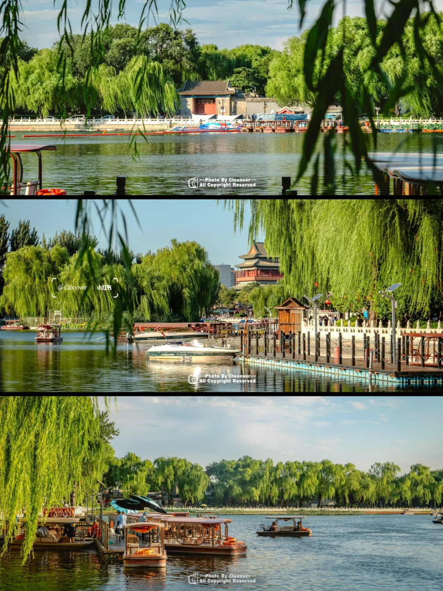
| 地址 | 北京市西城区（东起地安门外大街，南至新街口北大街，西至新街口豁口，北至钟鼓楼） |
|---|---|
| 开放时间 | 全天开放（全年无休） |
| 门票价格 | 免费，无需预约。内部部分景点（如恭王府40元、钟鼓楼等）需单独购票 |
| 预计时长 | 2-3小时 |
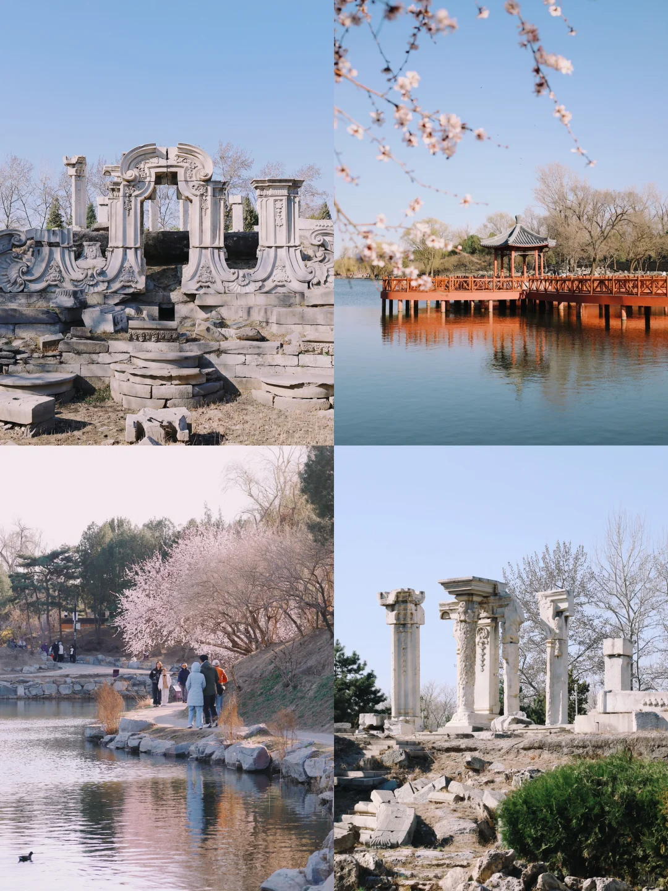
| 地址 | 北京市海淀区清华西路28号 |
|---|---|
| 开放时间 | 旺季（4月1日-10月31日）6:00-21:00（19:00停止售票/入场）；淡季（11月1日-3月31日）7:00-19:30（17:30停止售票/入场） |
| 门票价格 | 大门门票10元；西洋楼遗址景区15元；盛时全景模型展10元；联票25元。60-64周岁半价；65周岁及以上免费（含大门门票） |
| 预计时长 | 约3小时 |
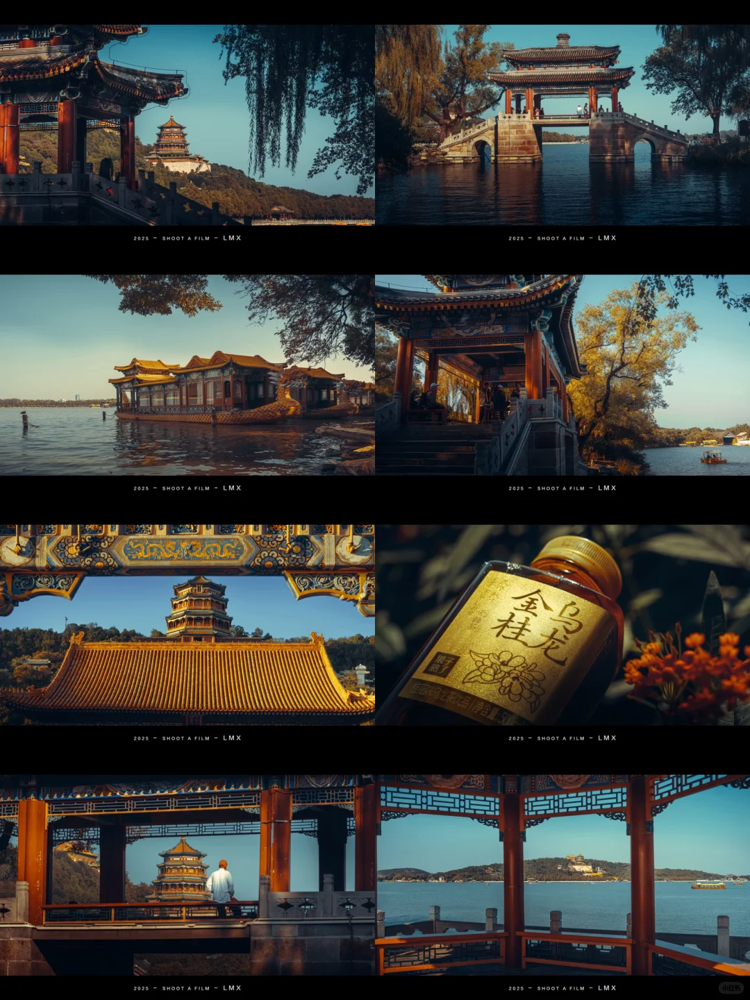
| 地址 | 北京市海淀区新建宫门路19号 |
|---|---|
| 开放时间 | 旺季（4月1日-10月31日）6:00-20:00（18:00停止入园）；淡季（11月1日-3月31日）6:30-19:00（18:00停止入园）。园中园（佛香阁等）：旺季8:00-18:00；淡季8:30-17:00（周一闭园） |
| 门票价格 | 旺季大门票30元，联票60元；淡季大门票20元，联票50元。60周岁及以上免费（含大门票）；园中园需另购票 |
| 预计时长 | 约3小时 |
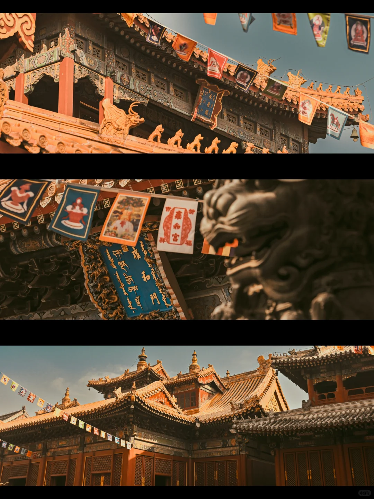
| 地址 | 北京市东城区雍和宫大街28号 |
|---|---|
| 开放时间 | 冬春季（11月1日-3月31日）9:00-16:30（16:00停止入场）；夏秋季（4月1日-10月31日）8:30-16:30（16:00停止入场） |
| 门票价格 | 25元/人；60周岁及以上半价12元/人。6周岁以下或1.2米以下儿童、军人、残疾人等免费 |
| 预计时长 | 1-2小时 |
BEIJING CUISINE
一口京城味，半部烟火史。北京这地界儿，六朝古都，天子脚下。王公贵胄吃的是排场，市井百姓嚼的是日子。这一出一入之间，便生出无数吃食的故事来。今儿不荐店，不论价，单说这些吃食的前世今生，权当饭桌上多添一碟下酒的谈资。
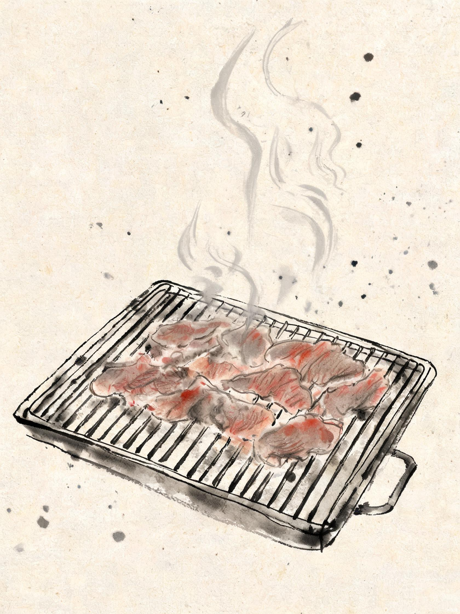
铁条上的蒙古风
要说烤肉，得从蒙古人说起。当年成吉思汗的铁骑踏遍欧亚，行军打仗，没锅没灶，头盔往火上一架，肉片往上一摊，便是烤肉。这法子传到北京，让回回们拾掇出了新花样。
所谓"炙子"，是一副铁条焊成的烤盘，形如百叶窗，下面烧松枝或炭火。肉片事先用酱油、料酒、葱姜末腌过，往炙子上一摊，滋啦一声，香气便顺着烟气往上蹿。讲究的主儿，自己端着盘子站着烤，一只脚踏在板凳上，边烤边吃，这叫"武吃"。文雅的便坐着让伙计烤好端上来，这叫"文吃"。
老北京烤肉有"三大家"——烤肉宛、烤肉季、烤肉刘。烤肉宛在宣武门，打咸丰年间就支摊子了；烤肉季在什刹海，是个姓季的回回先摆的浮摊，后来发了家；烤肉刘在友谊医院边上，年头最晚，口碑不差。三家各有各的绝活，但规矩一样：肉只选牛羊上脑，片得薄如纸，迎风能飘起来。
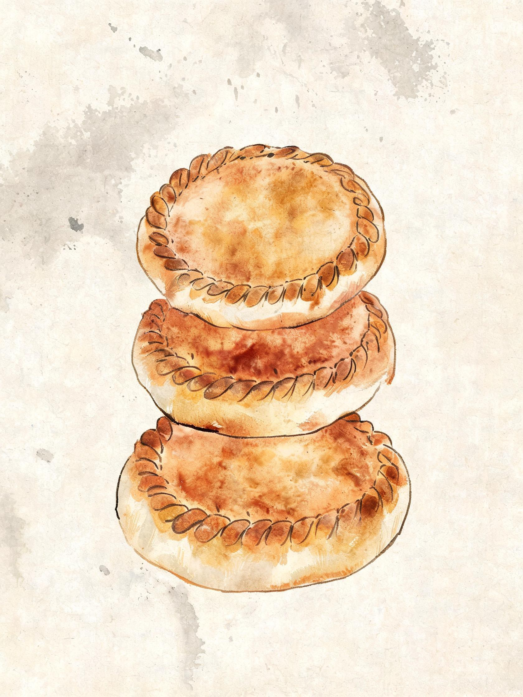
紫禁城门上的金疙瘩
门钉肉饼这名儿，透着京城独有的那份讲究。紫禁城的门上钉着铜鎏金门钉，九路九排，九九八十一个，取的是"九五之尊"的意思。这肉饼做出来，圆鼓鼓、厚墩墩，正面还捏出一圈花边，往那儿一摆，活脱脱就是一个门钉。
传说是这么说的：慈禧太后有一回嘴馋，传膳时御膳房犯了难——山珍海味老佛爷吃腻了。有个厨子灵机一动，拿牛肉大葱做馅，包进面皮里，烙得两面金黄，端上去。太后一看，嘿，这不就是宫门上的门钉吗？一口咬下去，皮脆馅香，汤汁四溢，凤颜大悦。
这故事真假难辨，但门钉肉饼的讲究是真的。皮要半烫面，凉了不硬；馅要牛肉大葱，七分肉三分葱，多了腻少了寡。煎的时候先烙正面，锁住花边，再翻面烙底，两面金黄才出锅。趁热吃，一口下去那汁水烫嘴，但舍不得吐——这就是门钉肉饼的厉害。
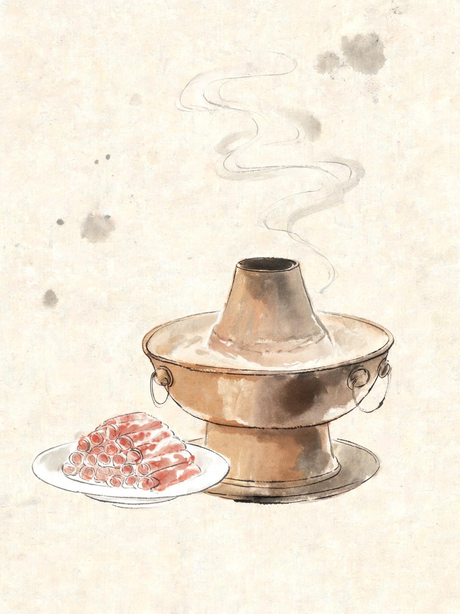
铜锅里的涮法儿
北京人涮羊肉，不叫"火锅"，叫"涮锅子"。一个铜锅，中间是烟囱，底下烧炭，水开得翻花，夹一片薄如蝉翼的羊肉，在滚水里一涮——就那么三五秒——肉色一变就捞，蘸麻酱小料吃。这涮法儿，讲究的是"快"字，涮久了肉老，涮快了不熟，差一秒都不行。
铜锅也有学问。为什么非得铜的？铜导热快，水翻得急，肉片下去不降温度，出来才嫩。那烟囱不叫烟囱，叫"火筒"，烧的是硬木炭，没烟没味。要是烧了带松脂的炭，羊肉就串了味儿，老饕一吃便知。
小料是灵魂。芝麻酱打底，韭菜花提鲜，酱豆腐增醇，虾油点睛，最后撒一把香菜末。各家小料配方是命根子，传男不传女。其实说白了就是比例不同，但差一点味儿就不对，你说玄不玄？涮肉的肉也讲究，只取羊后腿和上脑，俗称"黄瓜条"的部位。手工切，片要大、薄、匀。以前有名的大师傅，一刀下去，片片透光，往墙上贴能粘住。
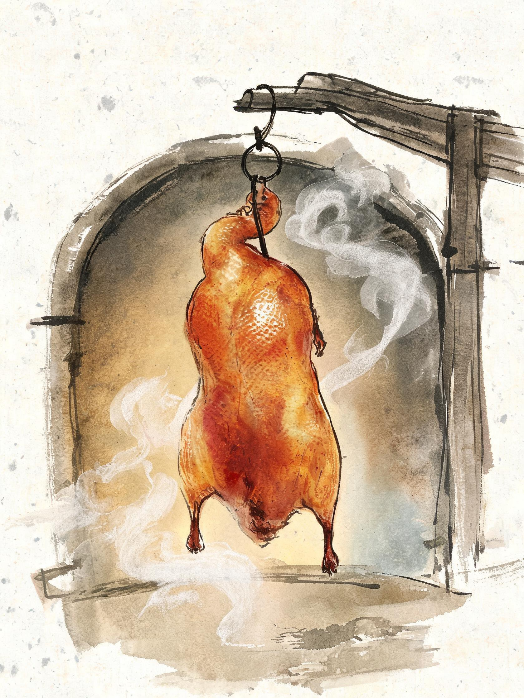
挂炉与焖炉的百年之争
北京烤鸭，分两派：挂炉与焖炉。挂炉派以全聚德为首。炉膛半开放，果木明火烤，鸭子挂里头，火苗舔着鸭皮，油脂一滴滴落入炉底的铁盘里，噼啪作响。老师傅拿着长杆子，隔一会儿就把鸭子换个位置，务使受热均匀。烤出来的鸭子，皮脆如玻璃，肉嫩似豆腐，片的时候得连皮带肉，薄厚均匀。全聚德从同治三年（1864年）开张至今，用的是"北京填鸭"，个头大，肉厚实。
焖炉派以便宜坊为代表。焖炉是封闭的，不直接见明火。炉壁先烧热，再把鸭子放进去，关上炉门，用炉壁的余温把鸭子"焖"熟。烤出来的鸭子皮肉之间多了一层油脂，口感更滋润。便宜坊比全聚德还老，永乐年间就在菜市口摆摊了，算下来六百多年了。
两派争了一百多年，谁也说服不了谁。挂炉的嫌焖炉的不够脆，焖炉的嫌挂炉的太干。其实各有各的好，就看你好哪一口。但有一件事是两派共同的规矩：鸭子只能烤，不能炸。你要是在北京跟人说吃"炸鸭"，人家能跟你急。片鸭子也是绝活。一整只鸭子，片一百零八片，片片带皮带肉，不多不少。片完的鸭架子别扔，熬白菜汤，撒把盐，那汤鲜得能把眉毛鲜掉。
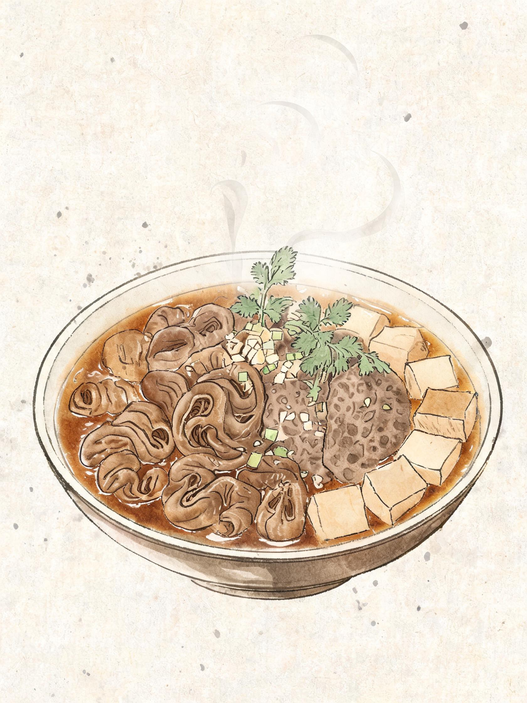
穷人嘴里的御膳
卤煮火烧，听着俗，吃着香，是老北京南城穷苦人嘴里蹦出来的宝贝。早年间，皇宫里吃苏造肉——那是拿五花大片肉和各种香料炖出来的，香得能让人从东华门闻到西华门。可御膳的东西，老百姓哪吃得起？但御膳房的太监们有法子：把苏造肉的配方偷出来，拿老百姓吃得起的猪下水——肠子、肺头、豆腐——替了那五花肉，再加上火烧（面饼），一锅炖了。这便是卤煮的由来。
小肠陈是卤煮的头一块招牌。打清末就在南城摆摊，传到如今已是第四代。老汤是命根子，那锅老汤据说从开业那天起就没断过火，每日添水加料，百年下来，汤里的味道一层叠一层，跟城墙根的土似的，年岁越长越厚实。
吃卤煮有讲究。先看那汤色——得是酱红色，浓而不浑。火烧切成井字块，豆腐三角块，肠子切段，肺头切片，码在碗底，浇上滚汤，再搁蒜泥、韭菜花、腐乳汁。一口下去，肠子弹牙，肺头软烂，火烧吸饱了汤汁但不烂，嚼着有劲儿。冬天来一碗，热气从肚子里往上顶，能把一天的寒气全赶跑。
有人说卤煮是"下水做的，上不得台面"。北京人听了这话不乐意：你知道什么？这卤煮里头，有宫里的方子，有民间的智慧，有百年的老汤，有一代代手艺人的命。它不是上不了台面，它就是台面。
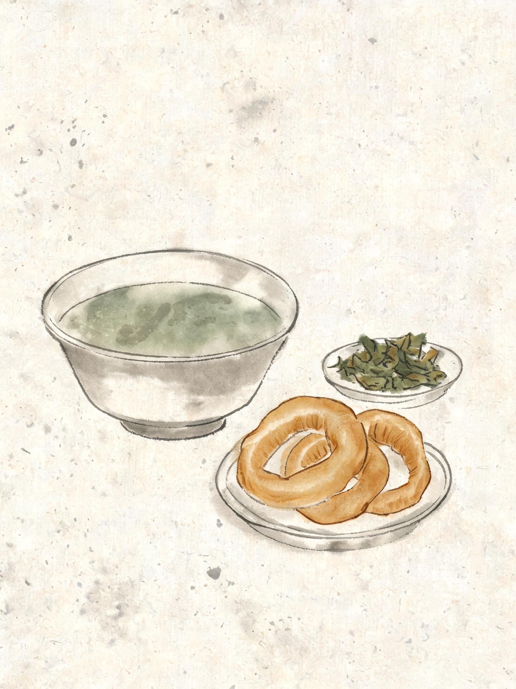
爱之如命，恨之入骨
豆汁这东西，是北京吃食里最能分出"自己人"和"外人"的试金石。绿豆泡涨，磨成浆，滤去豆渣，剩下的液体搁在那儿发酵。发到发酸发馊，表面起一层沫子，这就成了豆汁。灰绿色的，闻着一股酸腐味儿，头回见的人，十个有九个想吐。
可北京人爱它爱得要命。老北京有句话："没喝过豆汁儿，不算到过北京。"这话不假。豆汁喝进嘴里，酸、甜、馊、涩，什么味都有，但咽下去之后，回甘从嗓子眼儿往上冒，浑身通透。配一碗豆汁的，必须是焦圈和咸菜丝。焦圈炸得酥脆，豆汁滚烫，一凉一热，一脆一滑，对冲之下，那股子酸馊味竟变得妙不可言。
豆汁的来历也有意思。原本是做绿豆淀粉时的下脚料，穷人舍不得倒，搁着搁着发酵了，一尝，嘿，还别有风味。后来连宫里都喝上了。乾隆爷好这口，专门让御膳房每日备着。据说有一次乾隆召见大臣，端出豆汁来赐饮，大臣们捏着鼻子灌下去，脸上还得堆着笑说"好喝"。这画面，想想就好笑。
如今喝豆汁的地方不多了。坐的也都是老主顾，大爷大妈们端着碗，就着焦圈，一口豆汁一口咸菜，吃的是回忆，品的是岁月。你要是头一回喝，别急着吐——忍住第一口，第二口就顺了，到第三口，你可能就上瘾了。当然，也可能直接放下碗再也不碰。这就是豆汁的脾气：它不迎合任何人。
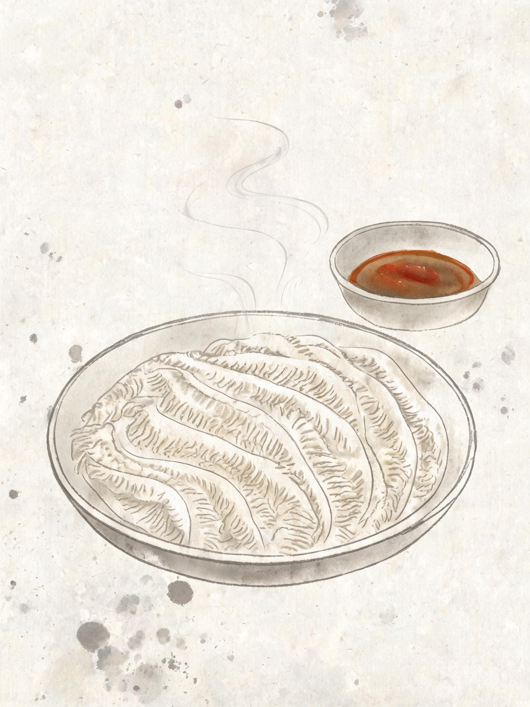
三秒定乾坤
爆肚，一个"爆"字，写尽了这道吃食的全部学问。牛百叶也好，羊肚领也罢，切好了往滚水里一汆——多久？三秒。多了老了，少了生了，就这三秒，一秒不能差。捞出来过凉水，装盘，蘸麻酱吃。就这么简单的东西，但做到极致就是绝活。
爆肚分十三个部位，各有各的名堂：肚仁、肚领、肚板、肚丝、蘑菇头、散丹……每个部位汆的时间不同，短的几秒，长的十几秒。一个老掌柜，靠一锅滚水和一双筷子，能在不同部位之间切换自如，毫厘不差。这门手艺，不是三年五年能练出来的。
蘸料也讲究。麻酱、酱油、醋、辣油、香菜、葱花，各有比例。但各家最大的不同，在于那一碟"爆肚蘸料"的秘方——据说有用虾油的，有用黄酒的，有的还搁一点点白糖提鲜。这方子，掌柜的比自家存折还看得紧。吃爆肚最高境界：端上来不蘸料，先吃一口原味。好的爆肚，本身带着一股子清甜和脆嫩，什么料都不蘸，光嚼那口脆劲儿，就是满嘴的香。蘸料是锦上添花，不是遮丑的粉。
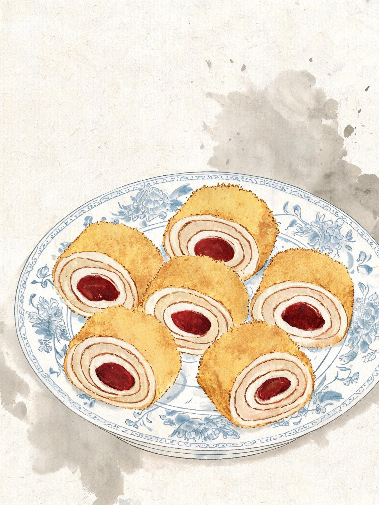
滚出来的甜
最后说个甜的。驴打滚，学名叫豆面糕，是老北京传统小吃。黄米面蒸熟，摊开抹上红豆沙，卷起来，在炒熟的黄豆面里一滚——那黄豆面沾满了一身，像极了驴子在土里打滚扬起一溜尘烟。这名字，俗到极点，妙到极致。
还有艾窝窝，雪白的糯米团子，里头裹着芝麻、核桃、瓜子仁，顶部点一粒红点。这红点是点睛之笔，像美人眉心的花钿，小小一枚，精致得很。护国寺小吃店里，这些一口一个的小点心摆了一排。北京人管它们叫"京味儿"，其实里面装的全是光阴。
过去庙会上，大人牵着孩子，花几文钱买一包驴打滚，孩子举着边走边吃，豆面掉了一身也不在乎。那光景，如今想起来，甜的不是点心，是那会儿的日子。
——人间烟火气，最抚凡人心。